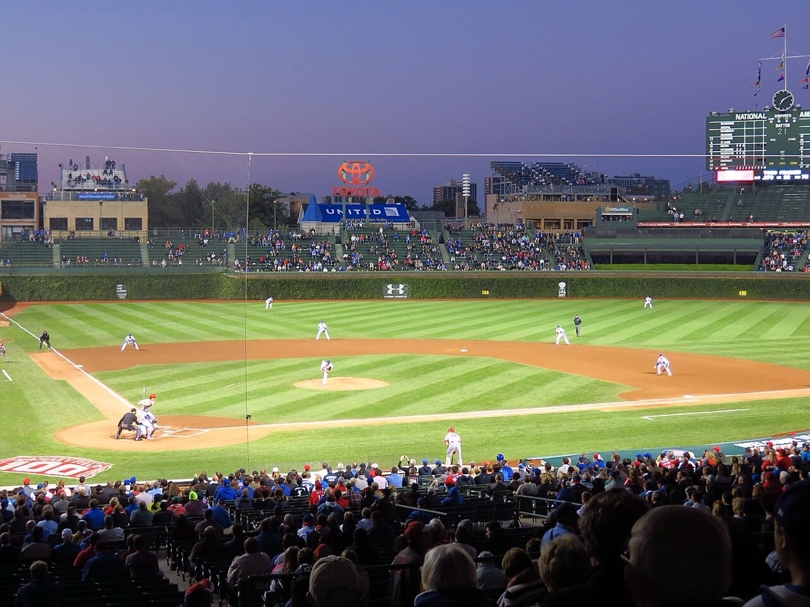

Photo: redlegsfan21, CC BY-SA 2.0, via Wikimedia Commons (source)- Baseball has no game clock: a game ends after 9 innings, however long that takes. More runs usually means more batters and more pitches.
- The record: on May 8, 1984, the White Sox and Brewers played 25 innings lasting 8 hours 6 minutes. It was so long that it had to be finished the next day. (White Sox won, 7–6.)
- By 2022 the average nine-inning game took 3 hours 4 minutes. In 2023 MLB added a pitch clock, and the average fell to 2 hours 40 minutes, the shortest since 1985.
Why it matters: our data ask the same question with a line: about how many extra minutes does each extra run add to a game?
Sources: MLB.com, “The longest games in MLB history”; AP / NBC Sports report on 2023 game times; ESPN (2022 average).